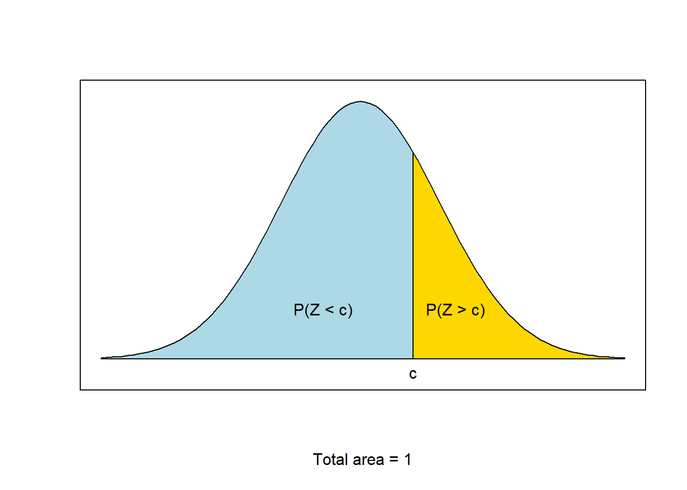
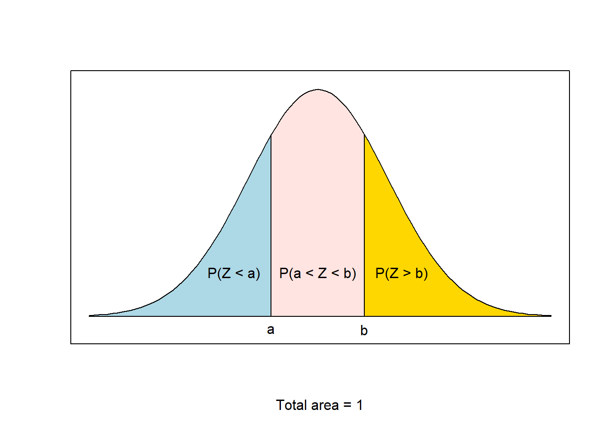
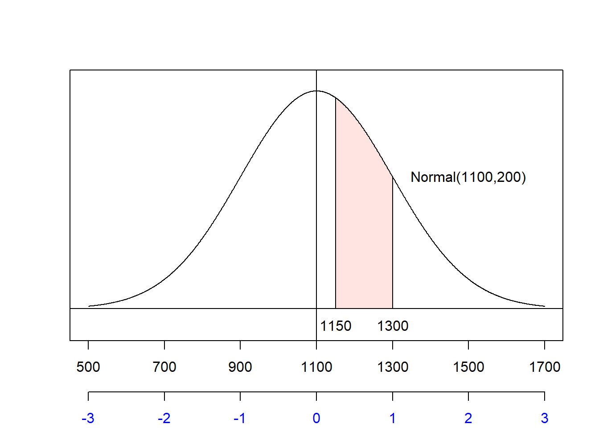
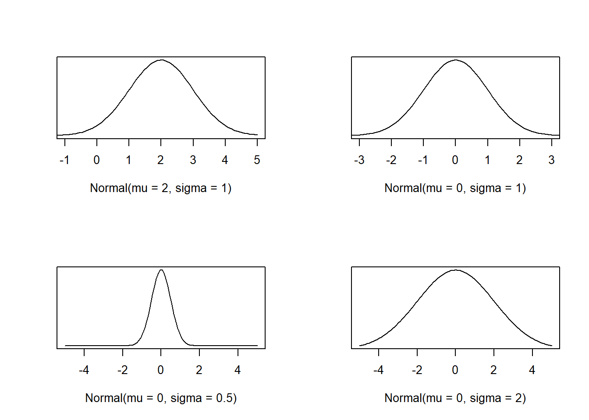
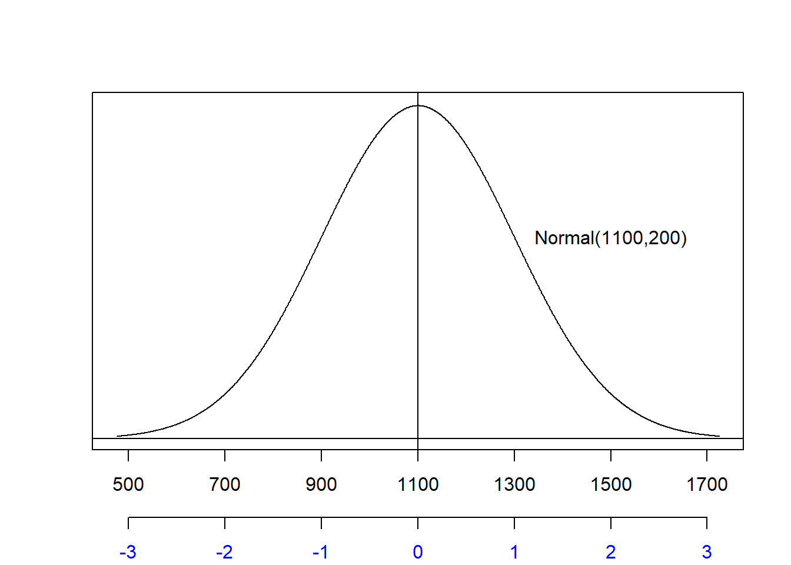
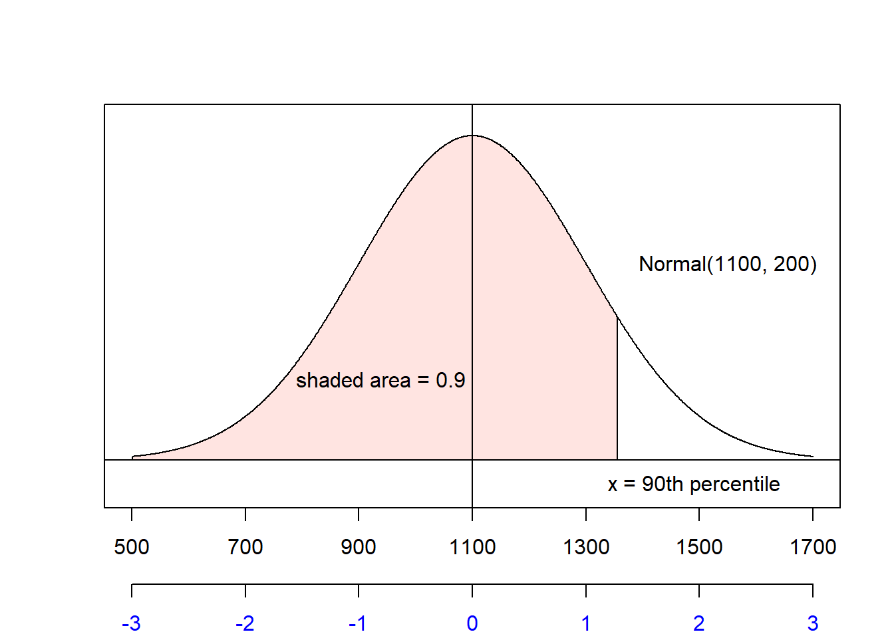
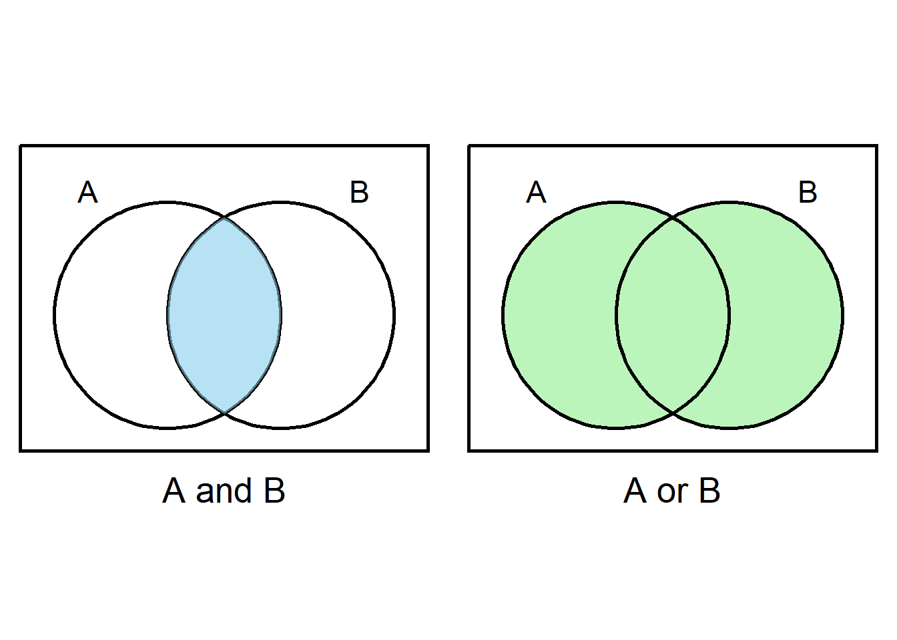
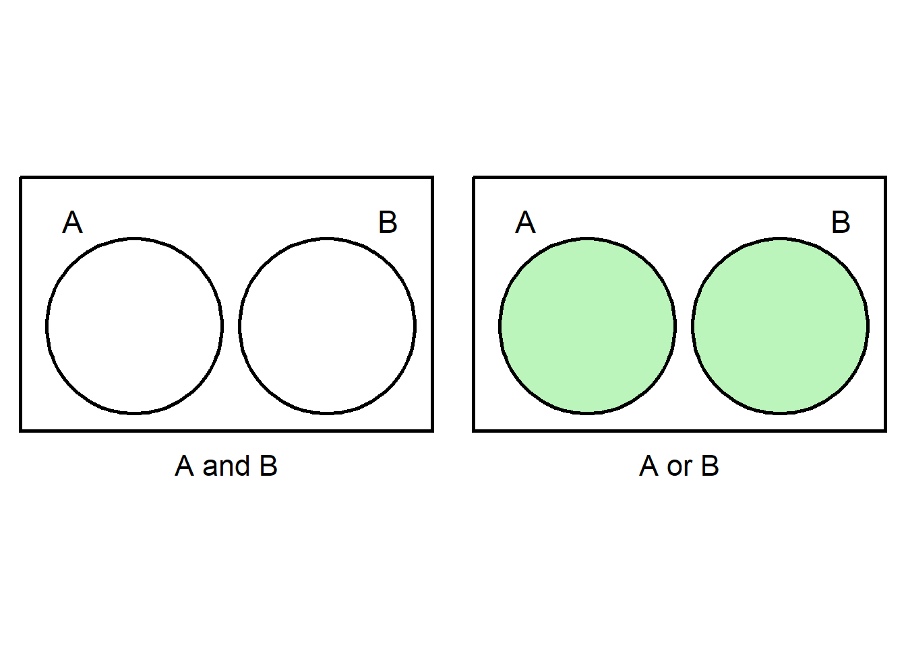

Module 5 Random Variables
In previous modules, we introduced the idea of variables and examined their distributions. We also began our discussion on probability theory. Now, we extend these concepts into what are called random variables. We will introduce the concept of random variables in general and will discuss a specific type of distribution - the binomial distribution. Then we will discuss a continuous probability distribution, the normal distribution. The normal distribution will provide a foundation for much of the inference we will complete throughout the rest of this course.
Module Learning Objectives/Outcomes
- Discuss discrete random variables using key terminology.
- Express cumulative probabilities using probability notation.
- Calculate the expected value and standard deviation of a discrete random variable.
- Calculate binomial probabilities.
- Use z scores to compare observations on different scales.
- Calculate probabilities for a normal distribution using area under the curve.
- Calculate normal distribution percentiles.
R Objectives
- Calculate binomial probabilities.
- Find cumulative probabilities for the standard normal distribution.
- Find percentiles.
This module’s outcomes correspond to course outcomes (4) use the binomial distribution as a model for discrete variables and (5) use the normal distribution as a model for continuous variables.
5.1 Discrete Random Variables
A random variable is a quantitative variable whose values are based on chance. By “chance”, we mean that you can’t know the outcome before it occurs.
A discrete random variable is a random variable whose possible values can be listed.
Notation:
- \(x\),\(y\),\(z\) (lower case letters) denote variables.
- \(X\), \(Y\), \(Z\) (upper case letters) denote random variables.
In contrast to events, where we usually used letters toward the start of the alphabet, (random) variables are typically denoted by letters from the end of the alphabet.
- \(\{X=x\}\) denotes the event that the random variable \(X\) equals \(x\).
- \(P(X=x)\) denotes the probability that the random variable \(X\) equals \(x\).
Recall: a probability distribution is a list of all possible values and their corresponding probabilities. (See Section 3.3 for a refresher.) A probability histogram is a histogram where the heights of the bars correspond to the probability of each value. (This is very similar to a relative frequency histogram!) For discrete random variables, each “bin” is one of the listed values.
Example:
Number of Siblings, \(x\) 0 1 2 3 4 Probability, \(P(X=x)\) 0.200 0.425 0.275 0.075 0.025 (Assume for the sake of the example that no one has more than 4 siblings.)

Interpretation: in a large number of independent observations of a random variable \(X\), the proportion of times each possible value occurs will approximate the probability distribution of \(X\).
5.1.1 The Mean and Standard Deviation
The mean of a discrete random variable \(X\) is denoted \(\mu_X\). If it’s clear which random variable we’re talking about, we can drop the subscript and write \(\mu\). \[ \mu_X = \Sigma xP(X=x) \] where \(\Sigma\) denotes “the sum over all values of \(x\)”: \[\Sigma xP(X=x) = x_1P(X=x_1) + x_2P(X=x_2) + \dots + x_nP(X=x_n).\]
The mean of a random variable is also called the expected value or expectation. Recall that measures of center are meant to identify the most common or most likely, thus the value we can expect to see (most often).
Example: for the Siblings distribution, \[\mu = 0(0.200)+1(0.425)+2(0.275)+3(0.075)+4(0.025)=1.3\] Make sure you understand how we used the formula for \(\mu\) and the probability distribution to come up with this number.
The random variable \(X\) represents draws from some population, so \(\mu\) is just the population mean. In the above example, the mean number of siblings (for people in that population) is 1.3.
The larger the number of observations, the closer their average tends to be to \(\mu\). This is known as the law of large numbers.
Example: Suppose I took a random sample of 10 people and asked how many siblings they have. \[2,2,2,2,1,0,3,1,2,0\] In my random sample of 10, \(\bar{x}=2\), which is a reasonable estimate but not that close to the true mean \(\mu=1.3\).
- A random sample of 30 gave me a mean of \(\bar{x}=1.53\).
- A random sample of 100 gave me a mean of \(\bar{x}=1.47\).
- A random sample of 1000 gave me a mean of \(\bar{x}=1.307\).
We use concepts related to the law of large numbers as a foundation for statistical inference, but note that - although very large samples are nice to have - it’s not necessary to take enormous samples all the time. Often, we can come to interesting conclusions with fewer than 30 observations!
The variance of a discrete random variable \(X\) is denoted \(\sigma_X^2\) (or \(\sigma^2\) if it’s clear which variable we’re talking about). \[ \sigma_X^2 = \Sigma[(x-\mu_X)^2P(X=x)]\] OR \[ \sigma_X^2 = \Sigma[x^2P(X=x)]-\mu_X^2\] These formulas are exactly equivalent and you may use whichever you wish, but note that the second may be a little easier to work with.
As before, the standard deviation is the square root of the variance: \[\sigma = \sqrt{\sigma^2}\]
Example: Calculate the standard deviation of the Siblings variable.
In general, a table is the best way to keep track of a variance calculation:
\(x\) \(P(X=x)\) \(xP(X=x)\) \(x^2\) \(x^2P(X=x)\) 0 0.200 0 0 0 1 0.425 0.425 1 0.425 2 0.275 0.550 4 1.100 3 0.075 0.225 9 0.675 4 0.025 0.100 16 0.400 \(\mu\) = 1.3 Total = 2.6 Then the variance is \[\sigma^2 = 2.6 - 1.3^2 = 0.9\] and the standard deviation is \[\sigma = \sqrt{0.9} = 0.9539.\]
Section Exercises
- Consider the following probability distribution for some discrete random variable.
- Use probability notation to write the probability that \(X\) is less than 2. Then, use the table to find this probability.
- Find the expected value of the random variable \(X\).
- Find the standard deviation of the random variable.
- Consider the probability distribution of the number of dogs owned by people in the US. Assume for the sake of the problem that nobody has more than three dogs.
- Find the mean number of dogs owned by people in the US.
- For a randomly selected household, what is the probability they have at least 2 dogs?
| x | 0 | 1 | 2 | 3 | 4 |
|---|---|---|---|---|---|
| P(x) | 0.1 | 0.2 | 0.3 | 0.3 | 0.1 |
| Number of dogs, \(x\) | 0 | 1 | 2 | 3 |
|---|---|---|---|---|
| Proportion of people, \(p(x)\) | 0.635 | 0.212 | 0.131 | 0.022 |
5.2 The Binomial Distribution
The binomial distribution is used to describe the number of successes in some fixed number of trials (or some set sample size).
Example: Suppose we will roll three dice: a green (\(G\)), a blue (\(B\)), and a red (\(R\)). What is the probability that exactly one of them will result in a 1?
Let’s start by considering one specific scenario where exactly one die results in a 1: \[\begin{aligned} P(G = 1 \text{ and } B \ne 1 \text{ and } R \ne 1 ) &= P(G = 1)P(B > 1)P(R > 1) \\ &= \frac{1}{6} \times \frac{5}{6} \times \frac{5}{6} \\ &= (0.1667)(0.8333)(0.8333) \\ &= (0.1667)^1(0.8333)^2 \\ &= 0.1157 \end{aligned} \] Note that “not 1” in this scenario is the same as “greater than 1” and includes the values \(2\), \(3\), \(4\), \(5\), and \(6\), which is how we come up with those individual probabilities. Also notice that our first step was to use the multiplication rule for independent events!
But we also could have considered the scenarios where the Blue or Red die was the single die to roll a 1. In each case, the probability is the same: \((0.1667)^1(0.8333)^2\) so we need to multiply this probability by 3: \[P(\text{exactly one four-sided die rolls a 1}) = 3\times(0.1667)^1(0.8333)^2 = 0.3472\]
Next, think back to replication in an experiment. Each replication is what we call a trial. We will consider a setting where each trial has two possible outcomes.
Example: Suppose you want to know if a coin is fair (both sides equally likely). You might flip the coin 100 times (thus running 100 trials). Each trial is a flip of the coin with two possible outcomes: heads or tails.
The product of the first \(k\) positive integers \((1, 2, 3, \dots)\) is called k-factorial, denoted \(k!\): \[k! = k \times (k-1) \times\dots\times 3 \times 2 \times 1\] We define \(0!=1\).
Example: \(5! = 5 \times 4 \times 3 \times 2 \times 1 = 120\)
If \(n\) is a positive integer \((1, 2, 3, \dots)\) and \(x\) is a nonnegative integer \((0, 1, 2, \dots)\) with \(x \le n\), the binomial coefficient is \[\binom{n}{x} = \frac{n!}{x!(n-x)!}\]
Example: \[\binom{5}{2} = \frac{5!}{2!(5-2)!} = \frac{5 \times 4 \times 3 \times 2 \times 1}{(2 \times 1)(3 \times 2 \times 1)}\]
The binomial coefficient represents the number of ways to select \(x\) objects from a group of \(n\) objects, without replacement. When we say “without replacement”, we mean that we cannot select an object more than once. (Note that this implies a binomial coefficient should always result in a whole number!) This turns out to be a handy thing to be able to calculate when working with probability and random variables.
Example: When we worked out the probability of rolling exactly one \(1\) when rolling three dice, we found that there were \(3\) possible ways to do so. Using the binomial coefficient, \(n = 3\) rolls and \(x=1\) roll of a 1, so \[\binom{3}{1} = \frac{3!}{1!(3-2)!} = \frac{3 \times 2 \times 1}{(1) \times (2 \times 1)} = \frac{6}{2} = 3\] In this case, it was fairly straightforward to list all the ways to roll exactly one \(1\), but sometimes it’s not so simple and the binomial coefficient will save us a lot of headache.
Sometimes, we may want to simplify a binomial coefficient before taking all of the factorials. Why? Well, \[20! = 2,432,902,008,176,640,000\] Most calculators will not print this number! Instead, you’ll get an error or a rounded version printed using scientific notation. Neither will help you accurately calculate the binomial coefficient.
Example: \[\binom{20}{17} = \frac{20!}{17!3!} = \frac{20\times 19\times 18\times 17\times 16\times \dots \times 3\times 2\times 1}{(17\times 16\times \dots \times 3\times 2\times 1)(3\times 2\times 1)}\] but notice that I can rewrite \(20!\) as \(20\times 19\times 18\times 17!\), so \[\binom{20}{17} = \frac{20\times 19\times 18\times 17!}{17!(3\times 2\times 1)} = \frac{20\times 19\times 18}{3\times 2\times 1} = \frac{6840}{6} = 1140\]
Bernoulli trials are repeated trials of an experiment where:
- Each trial has two possible outcomes: success and failure.
- Trials are independent.
- The probability of success (the success probability) \(p\) remains the same from one trial to the next: \[P(X=\text{success})=p\]
The binomial distribution is the probability distribution for the number of successes in a sequence of Bernoulli trials.
Fact: in \(n\) Bernoulli trials, the number of outcomes that contain exactly \(x\) successes equals the binomial coefficient \(\binom{n}{x}\).
Example: Find the probability of rolling exactly one \(1\) in three dice rolls.
In this scenario, we are primarily interested in an outcome related to rolling a \(1\), so we will let this be our success. Rolling exactly one \(1\) means observing exactly one success. The other possibility (to rolling a \(1\)) is not rolling a \(1\), so this must be our failure. From our previous examples, we know this probability can be written as \[\binom{3}{1}(0.1667)^1(0.8333)^2\]
- \(\binom{3}{1}\) is the number of ways to observe \(1\) success in \(3\) trials, or rolls of the dice.
- \(0.1667\) is the probability of success.
- The \(1\) in the binomial coefficient and the power is the number of successes.
- \(0.8333\) is the probability of failure.
- By the complement rule, this value is equal to \(1-0.1667\) (one minus the probability of success).
- The \(2\) in the power is the number of failures.
- If each trial is a success or a failure, and we are interested in \(1\) success out of \(3\) failures, then the other \(3-1=2\) trials must be failures.
This is a binomial probability! Let’s see how this becomes the general binomial probability formula.
Let \(x\) denote the total number of successes in \(n\) Bernoulli trials with success probability \(p\). The probability distribution of the random variable \(X\) is given by \[P(X=x) = \binom{n}{x}p^x(1-p)^{n-x} \quad\quad x = 0,1,2,\dots,n\] The random variable \(X\) is called a binomial random variable and is said to have the binomial distribution. Because \(n\) and \(p\) fully define this distribution, they are called the distribution’s parameters.
To find a binomial probability formula:
- Check assumptions.
- Exactly \(n\) trials to be performed.
- Two possible outcomes for each trial.
- Trials are independent (each trial does not impact the result of the next)
- Success probability \(p\) remains the same from trial to trial.
- Identify a “success”. Generally, this is whichever of the two possible outcomes we are most interested in.
- Determine the success probability \(p\).
- Determine \(n\), the number of trials.
- Plug \(n\) and \(p\) into the binomial distribution formula.
Example: Approximately 44.5% of US households have dogs. If we are to take a random sample of 10 US households, what is the probability that exactly 4 of them will have dogs?
Solution:
- Assumptions: (1) We will take a random sample of 10 households, so there are exactly 10 trials to be performed. (2) The two possible outcomes are “dogs” or “no dogs”. (3) Since this is a random sample, we can assume that trials are independent. (4) The probability of a US household having a dog is (always) 0.445, so the success probability is constant.
- We will let \(\text{success = household has dog(s)}\) since the probability of interest relates to having dogs. Therefore \(\text{failure = household does not have dogs}\).
- \(P(\text{success}) = 0.445\) from the problem statement.
- We will take a random sample of 10, so our number of trials is \(n=10\).
- The formula looks like \[P(X=x) = \binom{n}{x}p^x(1-p)^{n-x} = \binom{10}{x}0.445^x(1-0.445)^{10-x}\] For exactly 4 successes, we set \(x=4\): \[\begin{aligned}P(X=4) &= \binom{10}{4}0.445^4(1-0.445)^{10-4} \\ &=\binom{10}{4}0.445^4(0.555)^{6}\end{aligned} \] Now, let’s take a moment to work through that binomial coefficient: \[\begin{aligned}\binom{10}{4} &= \frac{10!}{4!6!} \\ &= \frac{10\times 9 \times 8 \times 7 \times 6!}{(4 \times 3 \times 2 \times 1)\times 6!} \\ &= \frac{10\times 9 \times 8 \times 7}{4 \times 3 \times 2 \times 1} \\ &= \frac{5040}{24} \\ &= 210 \end{aligned}\] Plugging that into our binomial probability formula, \[\begin{aligned}P(X=4) &=210\times 0.445^4 \times 0.555^{6} \\ &= 210 \times 0.0392 \times 0.0292 \\ &= 0.241 \end{aligned}\] So the probability that exactly 4 of the 10 US households have dog(s) is 0.241.
5.2.1 Expected Value and Variance
The expected value (mean) of a binomial distribution is \(\mu = np\). The variance is \(\sigma^2 = np(1-p)\).
The shape of a binomial distribution is determined by the success probability:
- If \(p \approx 0.5\), the distribution is approximately symmetric.
- If \(p < 0.5\), the distribution is right-skewed.
- If \(p > 0.5\), the distribution is left-skewed.

5.2.2 Probabilities with Inequalities
We can also use the binomial probability formula to calculate probabilities like \(P(X\le x)\). Notice that we can rewrite this using concepts from the previous module \[P(X \le k) = P(X=k \text{ or } X=k-1 \text{ or } \dots \text{ or } X=2 \text{ or } X=1 \text{ or } X=0)\] Since \(X\) is a discrete random variable, each possible value is disjoint. We can use this! \[P(X \le k) = P(X=k) + P(X=k-1) + \dots + P(X=2) + P(X=1) + P(X=0)\]
Example: \[\begin{aligned} P(X \le 3) =& P(X = 3 \text{ or } X=2 \text{ or } X=1 \text{ or } X=0) \\ =& P(X=3)+P(X=2)+P(X=1)+P(X=0) \end{aligned}\]
We can also extend this concept to work with probabilities like \(P(a < X \le b)\).
Example: \(P(2 < X \le 5)\)
First, notice that if \(2 < X \le 5\), then \(X\) can be 3, 4, or 5: \[\begin{aligned} P(2 < X \le 5) &= P(X=3\text{ or }X=4\text{ or }X=5) \\ &= P(X=3)+P(X=4)+P(X=5) \end{aligned}\]
Note: if going from \(2 < X \le 5\) to “\(X\) can be 3, 4, or 5” doesn’t make sense to you, start by writing out the sample space. Suppose \(n=10\). Then the sample space for the binomial distribution is \[S = \{0, 1, 2, 3, 4, 5, 6, 7, 8, 9, 10\}\] Then I can check any number in this sample space by plugging it in for \(X\). So for 1, I can check \(2 < 1 \le 5\). Obviously this is not true, so we won’t include 1. Checking the number 2, I get \(2 < 2 \le 5\). Since 2 < 2 is NOT true, we don’t include 2. Etc.
These concepts apply to any other type of inequality, too! Figure out which values in the sample space satisfy the inequality, apply the addition rule for disjoint outcomes, and add up the individual probabilities.
Section Exercises
- Suppose you are going to roll a 6-sided die seven times. What is the probability of getting exactly three \(6\)s?
- Over the course of a board game, a player is going to roll a 10-sized die 30 times. Find the expected value and standard deviation for the number of \(10\)s rolled.
- In the 2024 NFL season, Gardner Minshew, quarterback for the Raiders, completed 66.3% of his pass attempts. Suppose we will randomly select 10 passes by Minshew and see if they are completed.
- What distribution could you use to model the probability that all 10 pass attempts are completed? Go through each condition and confirm is it satisfied.
- Find the mean and standard deviation number of completed passes.
- Find the probability that exactly 5 of the pass attempts are completed.
- Find the probability that all 10 of the pass attempts are completed.
- Find the probability that none of the pass attempts are completed.
- A restaurant has a reservation on the books for a 22 person birthday party. They know that 32% of their customers order dessert. The restaurant works with a local bakery to provide desserts, and they want to think about how many to order.
- What distribution could we use to model the number of birthday party goers who order dessert? Justify your answer by checking any necessary conditions.
- What are the expected value and standard deviation number of party goes who will order dessert?
- Find the probability that no more than 3 people order dessert.
- Find the probability that between 5 and 7 people (inclusive) order dessert.
- If you flip a fair coin 5 times, what is the probability of getting at least one heads? Hint: what is the complement of getting at least one heads?
- For smokers, the probability of developing a severe lung infection at some point in their lifetime is 0.3.
- Suppose we take a random sample of 20 smokers. What distribution could you use to model the probability of some number of them developing a severe lung infection? Justify your answer by checking any necessary conditions.
- Find the mean and standard deviation number of smokers (from the sample of 20) who will develop a severe lung infection during their lifetimes.
- For our 20 smokers, find the probability that none of them develop a severe lung infection during their lifetimes.
- Consider the probability distribution of the number of dogs owned by people in the US. (For the sake of the problem, assume no one has more than 3 dogs.)
- What proportion of people have at least one dog?
- Consider two categories: (1) people with no dogs and (2) people with dog(s). A random sample of 10 people were asked about their dog ownership. Let Y be the random variable which counts number of people with (some number of) dogs. What is the distribution of Y? Justify your answer by checking any necessary conditions.
- What is the probability that fewer than 3 people out of 10 will have dog(s)?
| Number of dogs, \(x\) | 0 | 1 | 2 | 3 |
|---|---|---|---|---|
| Proportion of people, \(p(x)\) | 0.635 | 0.212 | 0.131 | 0.022 |
5.3 The Normal Distribution
If we can represent a discrete variable with a probability histogram, what can we do with a continuous variable?
We represent the shape of a continuous variable using a density curve. This is like a histogram, but with a smooth curve:

For a variable with a density curve, the proportion of all possible observations that lie within a specified range equals the corresponding area under the density curve.

Properties of density curves:
- The curve is always above the horizontal axis (because probabilities are always nonnegative).
- The total area under the curve equals 1 (because \(P(S)=1\)).
A normal curve is a special type of density curve that has a “bell-shaped” distribution. In fact, all of the density curves I’ve shown in this section have been normal curves! We say that a variable is normally distributed or has a normal distribution if its distribution has the shape of a normal curve.
Why “normal”? Because it appears so often in practice! Lots of things are more common around the average and less common as you get farther from the average: height, amount of sleep people get each night, standardized test scores, etc. (In practice, these things aren’t exactly normally distributed… instead, they’re approximately normally distributed - and that’s ok.)
Normal distributions…
- have curves that extend indefinitely in both directions along the horizontal axis.
- are fully determined by parameters mean \(\mu\) and standard deviation \(\sigma\).
- are symmetric and centered at \(\mu\).
- have spreads that depend on \(\sigma\).
Pay close attention to the horizontal axis and how spread out the densities are in each of the following plots:

Notice that the bottom left plot comes to a sharper peak, while the bottom right has a gentler slope. This is what we mean by “spread”: the density on the bottom right is the most spread out.
For any (approximately) normally distributed variable,
- Approximately 68% of all possible observations lie within one standard deviation of the mean: \(\mu \pm \sigma.\)
- Approximately 95% of all possible observations lie within two standard deviations of the mean: \(\mu \pm 2\sigma.\)
- Approximately 99.7% of all possible observations lie within three standard deviations of the mean: \(\mu \pm 3\sigma.\)
Given some data, you can check if approximately 68% of the data falls within \(\bar{x}\pm s\), 95% within \(\bar{x}\pm 2s\), and 99.7% within \(\bar{x}\pm 3s\) to examine whether the data follow the empirical rule.
To check whether a variable is (approximately) normally distributed, we can check the histogram to see if it is symmetric and bell-shaped… or we can check to see if the variable conforms (approximately) to the empirical rule! If we decide it is approximately normal, we can estimate the parameters: \(\mu\) using \(\bar{x}\) and \(\sigma\) using \(s\).
5.3.1 Z-Scores
We standardize a variable using \[z = \frac{x-\mu}{\sigma}.\] This is also called a z-score. Standardizing using this formula will always result in a variable with mean 0 and standard deviation 1 (even if it’s not normal!).
Because z-scores always result in variables with mean 0 and standard deviation 1, they are also very useful for comparing values which are originally on different scales.
Note that a z-score tells us how many standard deviations an observation is from the mean. A positive z-score \(z>0\) is above the mean; a negative z-score \(z<0\) is below the mean. For example, if an observation has \(z=-0.23\), that observation is 0.23 standard deviations below the mean.
Example: ACT scores have mean 20.8 and standard deviation 5.8. SAT scores have mean 1500 and standard deviation 300. If Jose scored a 27 on his ACT and Navreet scored an 1850 on her SAT, who got a better score (relative to other test takers)?
We cannot compare their scores directly because the ACT and SAT are on different scales. Instead, we will compare their z-scores.
For the SAT, we are given \(\mu = 1500\) and \(\sigma = 300\). So Navreet’s z-score is \[z_{\text{Navreet}} = \frac{1850-1500}{300} = 1.17\] standard deviations above the mean. Then for the ACT, we have that \(\mu=20.8\) and \(\sigma=5.8\). So Jose’s z-score is \[z_{\text{Jose}} = \frac{27-20.8}{5.8} = 1.07\] standard deviations above the mean.
Comparing their z-scores, we can see that Navreet’s score is a little farther above the mean than Jose’s and so we can conclude that Navreet got the better score.
Take a moment to connect z-scores back to the empirical rule. If a z-score is the number of standard deviations an observation is from the mean, we can rewrite the empirical rule as: For any (approximately) normally distributed variable,
- Approximately 68% of all possible observations have z-scores between -1 and 1.
- Approximately 95% of all possible observations have z-scores between -2 and 2.
- Approximately 99.7% of all possible observations have z-scores between -3 and 3.
Note that, since nearly all observations fall within three standard deviations of the mean, this is another way to think about potential outliers: if an observation has a z-score less than -3 or greater than 3, it’s a potential outlier.
5.3.2 Normal Distribution Probabilities
In order to make normal distributions easier to work with, we will standardize them. A standard normal distribution is a normal distribution with mean \(\mu=0\) and standard deviation \(\sigma=1\). If \(X\) is approximately normal, then the standardized variable \(Z\) will have a standard normal distribution.
Properties:
- Total area under the curve is 1.
- The curve extends infinitely in both directions, never touching the horizontal axis.
- Symmetric about 0.
- Almost all of the area under the curve is between -3 and 3.
Note: when we z-score a variable, we preserve the area under the curve properties! If \(X\) is Normal\((\mu,\sigma)\), then \[P(X < c) = P\left(Z < \frac{c - \mu}{\sigma}\right) = P(Z < z).\]
We will think about area under the standard normal curve in terms of cumulative probabilities or probabilities of the form \(P(Z < z)\).
We will use the fact that the total area under the curve is 1 to find probabilities like \(P(Z > c)\):

Using the graphic to help visualize, we can see that \[1 = P(Z < c) + P(Z > c)\] which we can then rewrite as \[P(Z > c) = 1-P(Z<c).\]
We can also use this concept to find \(P(a < Z < b)\).

Notice that \[1 = P(Z < a) + P(a < Z < b) + P(Z > b),\] which we can rewrite as \[P(a < Z < b) = 1 - P(Z > b) - P(Z < a)\] and since we just found that \(P(Z > b) = 1 - P(Z < b)\), we can replace \(1 - P(Z > b)\) with \(P(Z < b)\), and get \[P(a < Z < b) = P(Z < b) - P(Z < a).\]
- \(P(Z > c) = 1 - P(Z < c)\)
- \(P(a < Z < b) = P(Z < b) - P(Z < a)\)
A final note, because the normal distribution is symmetric, \(P(X < \mu) = P(X > \mu) = 0.5\). Notice this also implies that, when a distribution is symmetric (and unimodal), the mean and median are the same!
Now that we can get all of our probabilities written as cumulative probabilities, we’re ready to use software to find the area under the curve!
One option for finding probabilities and z-scores associated with the normal curve is to use an online applet. The Rossman and Chance Normal Probability Calculator is my preferred applet. It’s relatively straightforward to use, but would be difficult to demonstrate in these course notes. Instead, we will demonstrate this applet in class. I recommend you bookmark any websites you use to find probabilities.
You can also find the area under a normal distribution using a Normal Distribution Table. These are outdated and not used anywhere but the statistics classroom. As a result, I do not teach them.
Using z-scores and area under the standard normal curve, we can now find probabilities for any normal distribution problem!
- Sketch the normal curve for the variable.
- Shade the region of interest and mark its delimiting x-value(s).
- Find the z-score(s) for the value(s).
- Use an applet (or the
pnormcommand in R) to find the associated area.
Example: Find the proportion of SAT-takers who score between 1150 and 1300. Assume that SAT scores are approximately normally distributed with mean \(\mu=1100\) and standard deviation \(\sigma = 200\).
First, let’s figure out what we want to calculate. Using area under the curve concepts, the proportion of test-takers who score between 1150 and 1300 will be \(P(1150 < X < 1300)\).
- Sketch. On the bottom axis, I am including \(\mu\), \(\mu\pm\sigma\), \(\mu\pm2\sigma\), and \(\mu\pm3\sigma\),as well as the corresponding z-scores (in blue).

- Shade and label:

- Calculate z-scores: \[x = 1150 \rightarrow z = \frac{1150-1100}{200} = 0.25\] and \[x=1300 \rightarrow z = \frac{1300-1100}{200} = 1.\]
- Use an applet to find \(P(Z < 0.25) = 0.599\) and \(P(Z < 1) = 0.841\) or use the
pnormcommand in R:
## [1] 0.5987063## [1] 0.8413447Note that \[P(1150 < X < 1300) = P\left(\frac{1150-1100}{200} < Z < \frac{1300-1100}{200}\right) = P(0.25 < Z < 1)\] and, using cumulative probability concepts, \[P(0.25 < Z < 1) = P(Z < 1) - P(Z < 0.25).\] We found \(P(Z < 0.25) \approx 0.5987\) and \(P(Z < 1) \approx 0.8413\), so \[P(Z < 1) - P(Z < 0.25) \approx 0.8413 - 0.5987 = 0.2426.\] That is, approximately 26.26% of test-takers score between 1150 and 1300 on the SAT.
5.3.3 Percentiles
We can also find the observation associated with a percentage/proportion.
The \(w\)th percentile \(p_w\) is the observation that is higher than w% of all observations \[P(X < p_w) = \frac{w}{100}\]
- Sketch the normal curve for the variable.
- Shade the region of interest and label the area.
- Use the applet (or R - see below) to determine the z-score for the area.
- Find the x-value using \(z\), \(\mu\), and \(\sigma\).
Note that if \(z = \frac{x-\mu}{\sigma}\), then \(x = \mu + z\sigma\).
Example: Find the 90th percentile for SAT scores.
From the previous example, we know that SAT scores are approximately Normal(\(\mu=1100\), \(\sigma=200\)).
- Sketch the normal curve.

- Shade the region of interest and label the area.

- Use the applet to determine the z-score for the area. This results in \(z = 1.28\).
- Find the x-value using \(z\approx 1.28\), \(\mu=1100\), and \(\sigma=200\): \[x = 1100 + 1.28(200) = 1356\] so 90% of SAT test-takers score below 1356.
Section Exercises
- Let \(X\) be the height of randomly selected adult men. Globally, the approximate mean and standard deviation of men’s heights are \(\mu = 68\) and \(\sigma = 3\).
- Use this information, along with the z-score formula, to fill in the table, below
- Assume \(X\) is approximately normal. What percent of male heights fall between 65 and 71 inches?
| x | 62 | 64 | ___ | 66 | 68 | 70 | ___ | 72 | 74 |
|---|---|---|---|---|---|---|---|---|---|
| z | ___ | ___ | -1 | ___ | ___ | ___ | 1 | ___ | ___ |
- Sketch the normal curve and shade the region of interest for the following probabilities
- \(P(Z < 1.5)\)
- \(P(Z > -1)\)
- \(P(-0.75 < Z < 0.5)\)
- Use a computer to find the following probabilities
- \(P(Z < 1.5)\)
- \(P(Z > -1)\)
- \(P(-0.75 < Z < 0.5)\)
- For what value of \(a\) will \(P(-a < z < a) \approx 0.95\)? Hint: remember the normal distribution is symmetric!
- Let \(X\) be the height of a randomly selected adult man. Globally, \(\mu = 68\) and \(\sigma=3\). Use this information to calculate the following probabilities. Hint: the table from (1) may be helpful.
- \(P(X < 70)\)
- \(P(64 < X < 72)\)
- Suppose \(\mu=20\) and \(\sigma=4\). Draw, shade, and label the normal curve, and then determine the probability.
- \(P(X < 23)\)
- \(P(X < 19)\)
- \(P(19 < X < 23)\)
- \(P(X < 15 \text{ OR } X > 22)\)
- Suppose \(\mu=15\) and \(\sigma=5\). Draw, shade, and label the normal curve, and then determine the percentile.
- 90th percentile
- 45th percentile
- 17th percentile
- ACT scores are well-approximately by a normal distribution with mean 20.8 and standard deviation 5.8.
- Find the probability that a randomly selected test taker scores below a 19.
- Find the probability a randomly selected test taker score above a 23.
- Find the probability a randomly selected test taker scored between and 18 and a 22.
- Find the ACT score associated with the 90th percentile.
- The average retirement age for an NFL player is 27.6 years old, with a standard deviation of 3.1.
- Draw a normal distribution for the age of retirement of NFL players. Mark \(\mu\), along with \(\mu \pm \sigma\), \(\mu \pm 2\sigma\), and \(\mu \pm 3\sigma\).
- Find the probability an NFL player retires before age 25.
- Tom Brady retired from the NFL in 2023 at age 45. Is it unusual for a player to stay in the NFL until such an age? Explain, and support your answer using math.
- Find the 75th percentile for NFL retirement age.
- The notation \(z_{\alpha}\) means the \(z\)-value such that the area of the right tail (the area to the right of \(z_{\alpha}\)) is \(\alpha\). That is, \(P(Z > z_{\alpha}) =\alpha\). For each \(z_{\alpha}\) below, draw, shade, and label the normal curve, then determine the value of \(z_{\alpha}\).
- \(z_{0.5}\) \[P(Z > z_{0.5}) =0.5\]
- \(z_{0.1}\)
- \(z_{0.05}\)
- \(z_{0.01}\)
R Lab: Probabilities and Percentiles
Binomial Probabilities
When it comes to calculating binomial probabilities, hand calculations can be cumbersome. Fortunately, this is another thing we can do in R!
Approximately 66% of US adults take prescription medications. Find the probability that, in a sample of 100 adults, exactly 65 take prescription drugs.
We want to find \(P(X = 65)\) where \(X\) has a binomial distribution with \(n=100\) and \(p=0.66\). (Take a moment on your own to make sure you can convince yourself that this satisfies the conditions for a binomial setting and that you understand how we got here from the prompt above.)
Instead of doing this by hand (the larger \(n\) is, the more difficult this tends to get!), we will use the dbinom command in R. The dbinom command takes in the following information:
xthe value \(x\) takes on in the expression \(P(X=x)\)sizethe value of \(n\)probthe probability \(p\)
## [1] 0.0815753So without doing any hand calculations, I find that \(P(X=65) = 0.082\); the probability that exactly 65 of 100 randomly selected US adults take prescription medication is 0.082.
Suppose now we want to find \(P(63 < X < 68)\). How can we manage that? We can figure out that this probability includes numbers between 63 and 68, but does not include 63 or 68. In fact, it is the numbers 64 through 67. SO we can break this up as \[ P(63 < X < 68) = P(X=64) + P(X=65)+ P(X=66) + P(X=67) \]
In R, we can get a sequence of whole numbers using the format a:b. For example
## [1] 64 65 66 67gives all whole numbers from 64 through 67.
I can then put this directly into the dbinom command!
## [1] 0.07587601 0.08157530 0.08397457 0.08272122This produces each individual probability \(P(X=64)\), \(P(X=65)\), \(P(X=66)\), and \(P(X=67)\). To quickly add these up, I am going to use the sum command. Notice that I put the entire dibnom command in the parentheses of the sum().
## [1] 0.3241471And so \(P(63 < X < 68) = 0.324\); the probability that between 64 and 67 (inclusive) US adults in a sample of 100 take prescription medication is 0.324.
Normal Distribution Probabilities
Standard normal probabilities are found using the command pnorm. This command takes arguments
q: the value of \(x\).mean: the mean of the normal distribution. (If you leave this out, R will use \(\mu=0\).)sd: the standard deviation of the normal distribution. (If you leave this out, R will use \(\sigma=1\).)lower.tail: whether to find the lower tail probability.- When this equals
TRUE, R will find \(P(X < x)\). - When this equals
FALSE, R will find \(P(X > x)\).
- When this equals
Suppose \(X\) is a normal random variable with mean \(\mu=8\) and standard deviation \(\sigma=2\). To find \(P(X > 4)\), I would write
## [1] 0.9772499So \(P(X > 4) = 0.9772\)
Because R will use the standard normal distribution if we leave out the mean and sd commands, it’s even easier to find probabilities for \(Z\), To find \(P(Z<1)\), I would type:
## [1] 0.8413447so \(P(Z < 1) = 0.841\).
A quick note about R: R will print very large numbers and numbers close to 0 using scientific notation. However, R’s scientific notation may not look the way you’re used to! Check out the R output for \(P(Z < -5)\):
## [1] 2.866516e-07When you see e-07, that means \(\times10^{-7}\)… so \(P(Z < -5) = 2.8665 \times 10^{-7} \approx 0.00000029\).
Normal Distribution Percentiles
Instead of using an applet, we can use the qnorm command in R to find the z-score corresponding to a percentile. In this case, we simply enter the percentile of interest expressed as a proportion in the qnorm command. That is, to find the z score for the 90th percentile, we would enter
## [1] 1.281552which gives the same result as the applet in the example above. Then, we can use R as a calculator to find the value of \(x\) (recall \(\mu=1100\) and \(\sigma=200\))
## [1] 1356.31This gives us the same result as before, that 90% of SAT test-takers score below 1356.